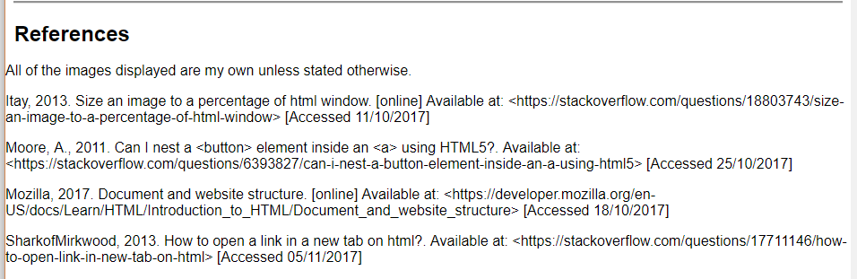
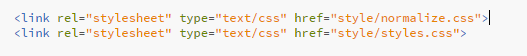

While adding my references to the footer of the index page I realised that the HTML elements that I wanted to display as plain text were being formatted as HTML. I did some research and discovered a way of displaying characters such as ‘<’ and ‘>’ as plain text instead of the browser trying to render the element inside of the square brackets. This article here explains how to insert special characters as text into a HTML document.
Before
After I applied my research

Week 10
This week I did something that I think has really improved my guide page. I embedded a custom create map from google maps. I have added pins to the map of all the locations I have written about, so the reader can easily find the location and visit them if they desire.
Getting the map on my guide page was incredibly easy, all I had to so after creating the map was to copy and paste a small snippet of html into my guide page.
Before validation
After validation
Week 9
In week 9 I looked at creating a mock from for my contact page. This is a simple form that a user will be able to fill out to contact me. On this page there is already links to some of my social media accounts such as Instagram and twitter that people can follow and contact me via these platforms. Although some people do not use these social media, hence another more generic method of contact had to be created to allow all to be able to message me.
As you can see bellow the snippet taken from my contact shows the form that I have implemented. The form is incredible simple and only requests the users name, an email so the message can be responded to, then finally the message itself.
In keeping the form as simple as possible I think that it makes it more inviting for the user to leave a message because of the simplicity to do so, the user only needs an email address, they also do not need to sign in or create an account. The process is extremely quick and easy, as well as user friendly due to the hints at what needs to be entered the input fields.
Week 8
After my progress review on week 7 I luckily only had to make a few changes to my website. The main change being that I needed to edit the order of my style sheets because I had the normalize style sheet after my own style sheet which meant that my style sheet would be overwritten by the normalize style sheet. This is clearly not what I wanted, so I corrected this by reversing the order.
Before style sheet change in HTML
After style sheet change in HTML

After looking for inspiration for website designs, I came across this website that had a horizontal scroll bar that I really liked. The website is a photography website found here and it uses a horizontal scroll bar to display the images on the website. I thought I could use this for my guide page to display the ‘useful links’ as images underneath the main content of the page.
Week 7
This week’s lecture was all about ‘flexible’ media, it was nothing new to me especially using relative ‘%’ instead of a fixed ‘px’ widths/height. This can be seen throughout my webpage in all my sections, divider elements as well as the media on my webpages. Some examples can be seen bellow of this.
.leftCol relative width example
.centreImg relative width example
Using relative widths adds a whole new dimension of responsiveness to a website because it allows the developer to make a site better suited for the modern web. People are now using mobile device to consume content from the web a lot more than in the past, hence having a dynamic webpage that can adapt to multiple screen sizes makes the consumption of the websites content much more easier than if it was a static page and the user had to ‘pinch zoom’ to read the content on the page, or view a static image that takes up more than the whole screen size.
This week I also created a new class for my p elements because I wanted them to clear the images that I use in the col2 divs on the index page. See bellow that the paragraph text isn’t bellow the images. It seems to have floated in order to fit more on the screen, but this doesn’t look good because the text is messy, it isn’t uniform throughout the entire webpage as some images are taller than others.
Paragraph before the clear class styling
Paragraph after the the class styling
To control the paragraph text, I have added a new class called clear and given it the styling to clear both which means that it will now be displayed under both column images and will not float up to the image on the right. Further reading on the clear property can be found here
Week 6
One of the main things I took away from week 6’s lecture was the use of columns in webpages. I really like the idea of having multiple columns on my webpage instead of just the single column like on the index page of my website. Hence, I have decided that I am going to use a multi column system with my guide page as seen bellow.
The challenge this week will to make the guide page responsive, so that the 2 columns will become one or one column might just not be displayed depending on what content I put on it. I think by having the division with the two columns I’ll be able to clearly separate the content of my page. I could even use the ride panel as a reference section or ‘further reading’ list.
Desktop Design
Mobile Design
After making the design I put this idea into practise by using HTML and CSS as you can see below. I really like how it looks now because you can clearly see the separation of the columns. I think the margin between the two columns clearly shows that these are two separate columns in a clean way without the use of say a big thick line in the middle of the screen to separate the sections.
Section HTML
Section CSS
I only have one issue and that is that the columns currently have different lengths, and this makes the page look messy in my opinion because of the different heights of the white background colours. I would rather both sections have the same length to make the page look uniform.
Week 5
I didn’t like how when I clicked on links it used the current window/tab to navigate to the new page. I think the user should never be forced to leave the website as it may lead to the them leaving the website all together or decrease the chance of them return because it’s annoying constantly having to spam the back button to return to the original page of a website. Hence, I did a little research and found quick fix to my problem here. As explained above I think this makes the website run a lot smoother and makes navigation easier for the user.
Another thing I looked at this week was making my menu responsive. I wanted it to start off as a classic horizontal menu and then change into a mobile friendly vertical drop down menu. This meant the menu would be able to fit on smaller screens without formatting errors or a menu with multiple rows.
Asos example menu
My 'mobile' menu
Above you can see a comparison between the Asos mobile website and my responsive website. I'm trying to illustrate how i've taken the dropdown menu used in many mainstream websites and using it in mine.
Week 5 Validation
Validated on
After every week I am trying to make sure that validation is becoming part of my work flow. Therefore, I will be showing the results of the validation after every week from now on. I think having this type of work flow is great because it means that I will not run into problems down the line if I did a validation on my entire website after completion. It's iterative/agile which means that because I am continuously validation my HTML I only need to make slight changes weekly compared to making many changes at the end of development.
Week 4
I tried to make a button to navigate back to the top of my pages instead of the user having to scroll back to the top. I thought this was a lot more convenient for the user. Although I kept running into problems with it, for example I placed the button within an anchor tag but this gave me errors when I validated my HTML.
Before
After
I then researched what the issue was and discovered that I was making the button more complex than it should have been. After reading this article on stakeoverflow, I realised that I couldn’t place a button within an anchor tag and, so I did some more research and found this article. Following on from the second article I made the changes in my HTML as seen above. Overall, I think the ‘Top’ button adds a lot more value to my page in terms of navigation because it’s very simple yet effective.
Week 3
One of the main things I took away from this week is best practices of html structure with html 5. We learned that div tags are now becoming redundant and newer tags are being used for better html structure. After looking at mozilla's page on Document and website structure, I made some changes to the structure of my html using the new tags.
Before
After
The images above illustrate how I added a footer tag to the article to house the publication date of the article. I think this makes the article look more professional because the article is clearly divided up into three parts: the title, the body, the publication date.
Week 2
After finishing week one I had created three pages for my website: the index or Learning journal page, the guide and finally the contact page.
This week I learnt to -
Link to parts of my page by using anchor tags. I've added them after every article so the user can quickly navigate back to the top of the page.
Create a list like this one
I went against the advice of not using CSS and started adding it to my web pages. It was really annoying because the pages just looked like simple text documents and I didn't like this so I did something about it by starting off with changing the top nav bar, making it all inline with the top on the screen. I also added some coulor to it and styling for when the page is 'active' as well as the links being hovered over. It's a simple design but i think it makes the pages look like a proper website.
How to add an image to my page and also how to style it using CSS from looking at this article, to make it fit better on the screen and scale correctly when the screen size is changed
Week 1
After finishing week one I had created three pages for my website: the index or Learning journal page, the guide and finally the contact page. The pages are really basic with no styling. I have created a nav menu at the top of the page that links to all of my pages.
After I added the required HTML to my page I validated it as seen bellow: